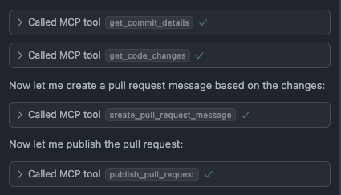
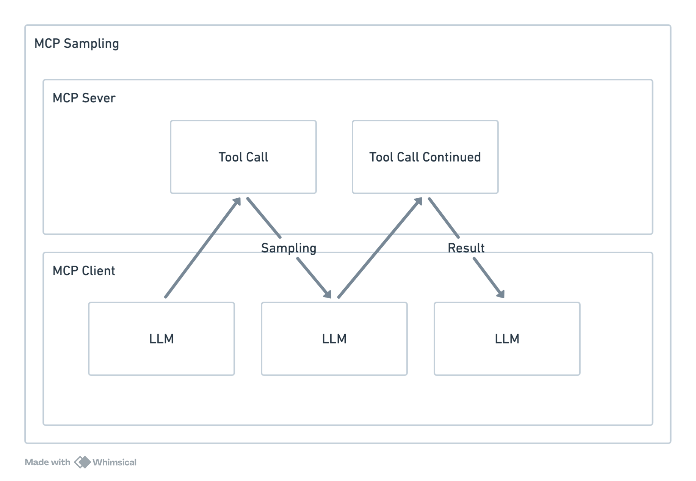

Previously I've played with tool calling in Langchain and Python sandboxes. But recently MCP (Model Context Protocol) is front and center. So I tried to create my own github MCP in Python to integrate cursor with the github cli.
What is MCP?
Before we get started, its good to familiarise yourself with the definition of MCP. The idea is that you define MCP servers that expose data (via resources) and actions (via tools). The tool definitions can be inspected via reflection by the MCP client and then it can call on the server when it needs to, the so called USB-C of LLMs.
So in my case cursor will act as a MCP client, and I'll write a local MCP server to connect cursor to github via tool calls.
My local github MCP server
Here I've implemented a MCP server with git and github tools:
I'm using FastMCP which has the look and feel of FastAPI endpoints.
@mcp.tool()
def multiply(a: float, b: float) -> float:
"""Multiplies two numbers."""
return a * b
Then using uv with inline metadata (see my previous post) allows us to hook it up to MCP clients without worrying about dependencies:
#!/usr/bin/env -S uv run --script
# /// script
# requires-python = ">=3.13"
# dependencies = [
# "fastmcp",
# ]
# ///
...
There was a bit of awkwardness since a lot of the commands depended on being run in the right directory. So we must set the cwd (current working directory) when invoking terminal commands.
Likewise I had setup some error handling and result handling:
async def run(*commands, cwd: str | None = None) -> str:
"""Run a terminal command and return the output."""
process = await asyncio.create_subprocess_exec(
*commands,
stdout=asyncio.subprocess.PIPE,
stderr=asyncio.subprocess.PIPE,
cwd=cwd,
)
await process.wait()
assert process.stdout
assert process.stderr
if process.returncode != 0:
raise Exception(await process.stderr.read())
return (await process.stdout.read()).decode()
Finally we can add the MCP server to cursor:
{
"mcpServers": {
"pull_request": {
"command": "/Users/jamie.chang/github.py"
}
}
}
And now I have a way to interact with my github PRs right inside cursor 
This has now opened up the door to adding other MCP server such as slack and JIRA, allowing me improve my workflow.
Why not use the official MCP server?
You might have seen: official github MCP server and wondered why I don't just use this. Well there are several reasons:
- The setup cost of the official MCP server is quite high, requiring docker and credentials.
- Writing my own tools allow a much greater degree of customisation. Allowing me to write my own templates and structure git commands the way I want.
- Creating my own MCP server allows me to understand MCP to a greater degree.
As I was drafting this post, I also came across Simon Willison's post on an exploitation of the official MCP server. Exploits like this are also possible with your own MCP servers but you can refine your tools to cater to your own needs and in the process this can limit the attack surface.
Things that bugged me.
As MCP is a new concept, it is still very rough. This applies to both the server and the client. As I was implementing the MCP server I discovered cursor had some bugs that prevented me from using enums in my tool definition.
On the server side, I had trouble installing some MCP servers locally. This may be solved by remote MCP servers that would live in the cloud and allow you to simply connect to it. The trouble is I couldn't find any SaaS they were available. This is perhaps due to the lack of maturity of MCP especially when it comes authentication.
Another problem is that cursor only supports MCP tools, it doesn't support other MCP features such as resource and prompts. The general support for the MCP protocol is not very consistent across the board.
Looking ahead: Sampling
The MCP protocol has recently defined a new concept called sampling. I think it's perhaps the most telling when it comes to the intention of MCP.
The concept sampling allows the server to invoke a LLM during a tool invocation, seeding some of the control to the server. An example lifted from fastMCP's docs:
@mcp.tool
async def analyze_sentiment(text: str, ctx: Context) -> dict:
"""Analyze the sentiment of a text using the client's LLM."""
# Create a sampling prompt asking for sentiment analysis
prompt = f"Analyze the sentiment of the following text as positive, negative, or neutral. Just output a single word - 'positive', 'negative', or 'neutral'. Text to analyze: {text}"
# Send the sampling request to the client's LLM (provide a hint for the model you want to use)
response = await ctx.sample(prompt, model_preferences="claude-3-sonnet")
# Process the LLM's response
sentiment = response.text.strip().lower()
# Map to standard sentiment values
if "positive" in sentiment:
sentiment = "positive"
elif "negative" in sentiment:
sentiment = "negative"
else:
sentiment = "neutral"
return {"text": text, "sentiment": sentiment}
I was a little perplexed by this initially, in the above example we could probably have just split up the tool call. But the point of this is to allow server developers to have more control and involve LLM in the workflow.
And the more I look at it, the more I think it looks like a system call:

Though it's seeding some of the control to the server, the sampling call is designed with security in mind and supports human in the loop controls. This is to me is analogous to how the user program can request operating system resources via system calls.
This positions the LLM at the core, the CPU in our analogy. The servers are the programs running on the hypothetical operating system. Looking at the bigger picture this is exactly what the creators of MCP Anthropic envisions with their LLMs making it the star of the show.
I'm not fully convinced on MCP by any means, but for the first time in a long while, it felt like I got some control in how I want the LLM to perform.